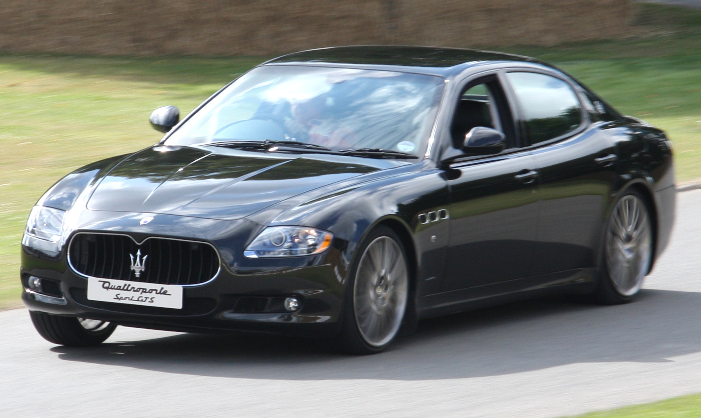
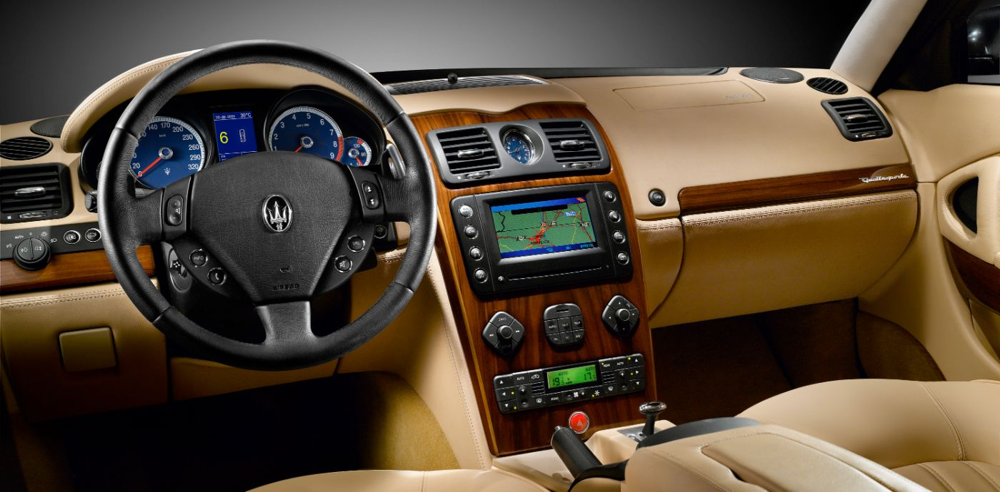
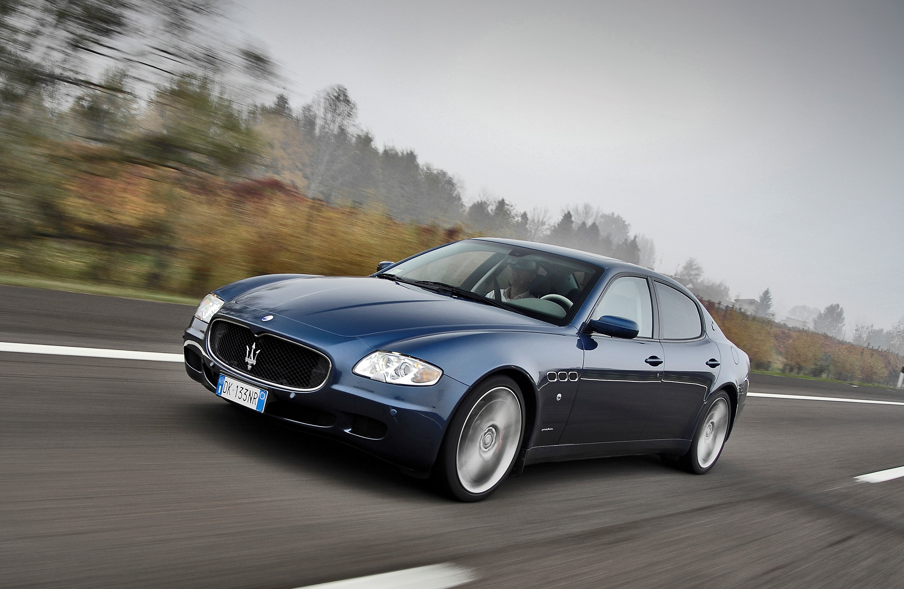

The Maserati Quattroporte V was a true leap forward for the Italian luxury sedan, a car that melded exquisite design with a performance pedigree few of its rivals could match. Debuting in 2003, it marked the beginning of a new era for Maserati, embracing both elegance and power with a sophistication that echoed the brand’s sporting history. Designed by Pininfarina, the Quattroporte V is a refined expression of Italian luxury, with a sweeping, graceful silhouette that hides a powerhouse beneath its bodywork. It wasn’t just about looks, though; this was a car that carried with it a promise of unparalleled driving experience, a perfect blend of comfort and performance that Maserati had long been known for.
In many ways, the Quattroporte V was the last of its kind—a car that combined the thrills of a true driver’s machine with the opulence of a high-end executive sedan. While its competitors might have leaned more toward plush luxury or overt performance, the Quattroporte stood apart, offering a taste of both worlds in a single package. It had the agility of a sports sedan, with precise handling and sharp responses, but it also boasted the kind of interior you could get lost in. The cabin was a sanctuary of plush leather, wood trim, and tasteful detailing that made every journey feel like an event. And while the performance could hold its own on a racetrack, it was equally at home on a winding mountain road or gliding through city streets. A modern masterpiece, the Quattroporte V epitomized Maserati's vision of luxury in motion.
The Quattroporte V was offered in several variants throughout its production, each refining the formula of luxury and performance in its own way. At its core was a naturally aspirated Ferrari-derived V8, initially paired with the controversial DuoSelect automated manual transmission before Maserati introduced a more conventional ZF automatic in later models. The early DuoSelect cars delivered sharper performance but required more driver involvement and frequent maintenance, while the ZF-equipped versions prioritized smoothness and reliability. Trims like the Sport GT and Sport GT S enhanced the driving experience with stiffer suspension, quicker shifts, and sportier exhaust notes, while the Executive GT catered to those seeking maximum comfort with opulent interior appointments. Near the end of production, Maserati also introduced the Quattroporte GTS, which pushed the envelope with increased power and a more aggressive setup, ensuring it remained competitive against newer rivals.
When buying a Quattroporte V today, careful inspection is key, as maintenance costs can be steep if issues are neglected. The early DuoSelect transmission, while thrilling when working properly, is known for clutch wear that requires costly replacement every 30,000-50,000 kilometers. The ZF automatic models are generally more robust and are often recommended for those prioritizing reliability. Suspension components, particularly bushings and ball joints, tend to wear quickly due to the car’s weight and handling setup, so a thorough check is essential. Cooling system components, including radiators and water pumps, should also be inspected for leaks or failures. Interior electronics, while luxurious, can be temperamental, and ensuring that all functions—especially the infotainment system and seat controls—operate correctly can save future headaches. A well-maintained Quattroporte V rewards its owner with an experience few sedans can match, but finding one with a solid history of servicing is crucial to keeping its Italian charm from turning into a costly headache.